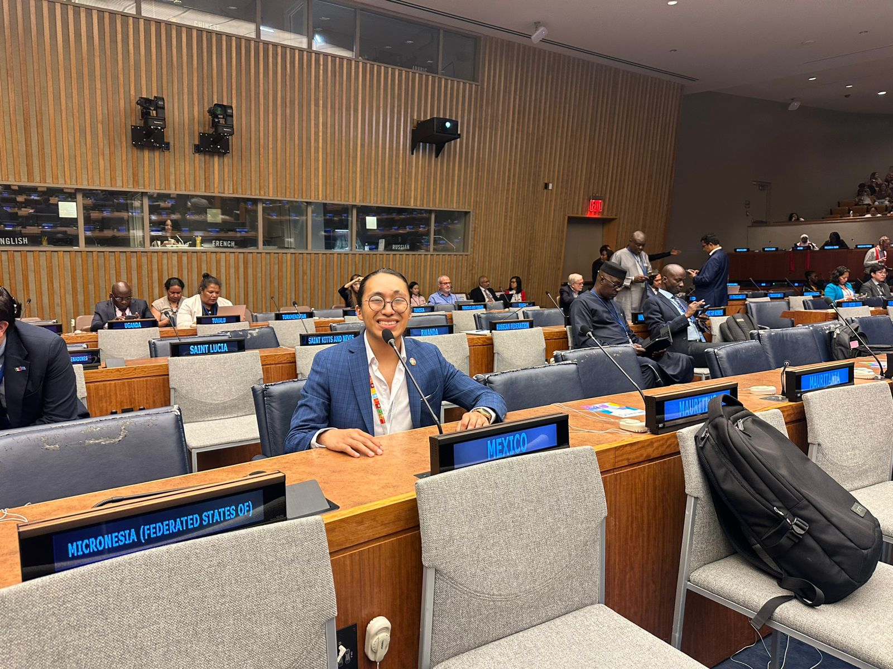

High Level Political Forum: participation and outcomes
The HLPF demands precision. Discussions about sustainable development are meaningful only when claims are linked to measurable actions, responsible language, and documented follow up.

Why careful language matters
In high level spaces, vague statements can travel fast without accountability. I approached the experience as work that must be explainable: what was done, what can be supported, and what outcomes were achieved.
Personal outcome
This milestone reinforced a consistent principle in my trajectory. Documentation is not an accessory. It is the mechanism that allows a public contribution to be reviewed, improved, and trusted.